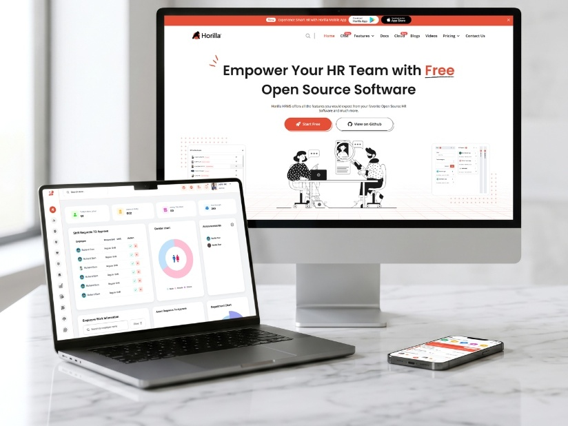
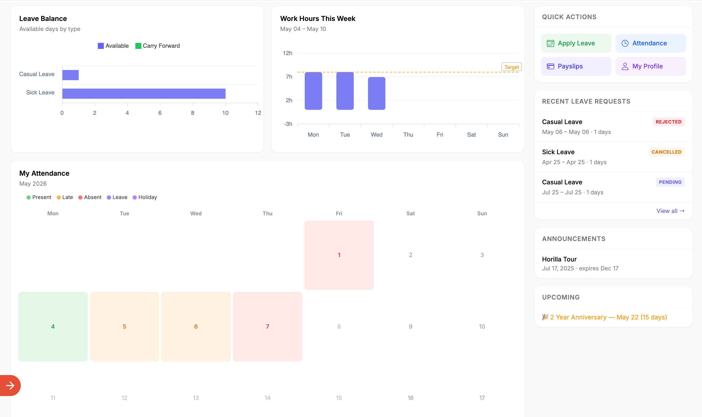
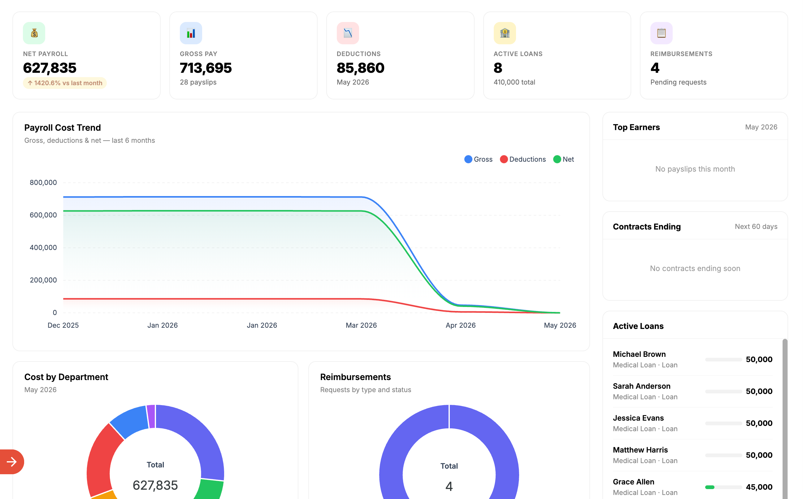
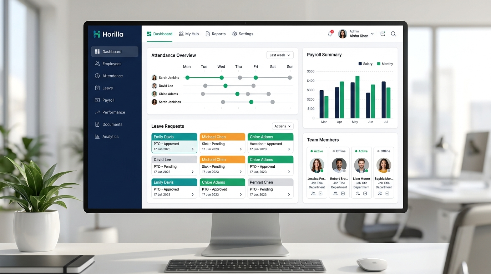

Horilla
Comprehensive human resource management system structuring complex workforce operations, attendance, onboarding, payroll, and employee self-service into an intuitive experience.

Background
Humanizing enterprise workforce tools
Enterprise HR software is traditionally cumbersome and rigid. Horilla was conceived as a modern open-source platform that eliminates everyday administrative friction, turning leave requests, biometric punch logs, and shift scheduling into effortless actions.
Designing for dual user mindsets
We crafted a split-architecture UX: an information-dense, keyboard-friendly command view for HR administrators, paired with a clean, low-friction self-service portal for general employees.


Work Highlight
Visual clarity for complex policy engines
We built a cohesive dashboard architecture featuring visual donut meters for leave balances, zero-latency approval trays in notification toasts, and a transparent salary breakdown calculator.
Horilla achieved rapid global open-source adoption, recognized across community forums as one of the cleanest and most accessible HR tools in modern web development.

Faced Challenges
Balancing deep enterprise control with friction-free self-service
Enterprise human resources software deals with sensitive workforce data, statutory compliance, and varied employee tech comfort levels across global operations.
Serving Dual User Personas Seamlessly
HR administrators need high-density tables and batch actions, while everyday employees only need quick self-service. We created a split-view interaction architecture that gives managers deep command views while keeping employee portals distraction-free.
Visualizing Convoluted Leave Accrual Policies
Corporate leave policies involve complex rollover formulas and probationary restrictions that confuse staff. We replaced dense policy text with visual radial meters showing earned, used, and pending days with instant eligibility feedback.
Eliminating Approval Chain Bottlenecks
Time-off and expense requests frequently stalled inside manager inboxes. We introduced quick-action approval trays directly in notification toasts and top-level widgets, enabling one-click approvals without context switching.
Demystifying Complex Payroll & Deductions
Cryptic payroll payslips cause frequent support tickets. We designed an interactive salary breakdown module that itemizes gross wages, tax tiers, allowances, and net deposits with complete transparency.